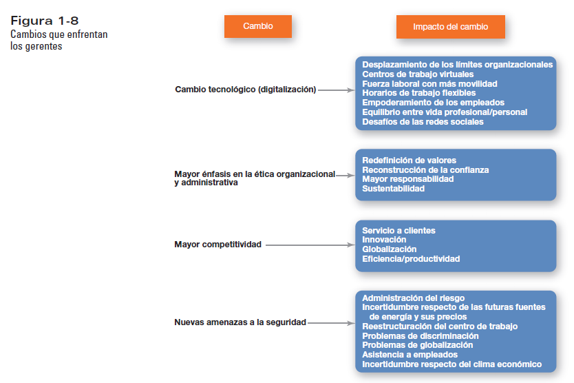

1. Comprendiendo la Administración y a los Gerentes

El estudio de la administración es fundamental porque todos, tarde o temprano, seremos gerentes o seremos dirigidos por uno. La primera parte de la obra de Robbins y Coulter nos introduce al panorama general de qué implica exactamente el trabajo gerencial, cómo ha evolucionado y cuáles son las responsabilidades que hacen que una organización funcione correctamente.
¿Quiénes son los gerentes?
Solía ser muy sencillo definir quiénes eran los gerentes: eran los miembros de la organización que les decían a otros qué hacer y cómo hacerlo. Era simple diferenciar a los gerentes de los empleados sin una posición gerencial. Sin embargo, en el cambiante entorno actual, esa distinción se ha vuelto más borrosa. Muchos empleados con trabajos de carácter operativo ahora asumen responsabilidades gerenciales, especialmente en estructuras basadas en equipos.
Entonces, ¿cómo definimos a un gerente en la actualidad? Un gerente es alguien que coordina y supervisa el trabajo de otras personas para que se logren los objetivos de la organización. El trabajo de un gerente no se trata de sus logros personales, sino de ayudar a otros a realizar su trabajo. Los gerentes suelen clasificarse en tres niveles dentro de organizaciones con estructuras tradicionales (en forma de pirámide):
- Gerentes de primera línea (o supervisores): Se encuentran en el nivel más bajo. Dirigen el trabajo del personal operativo, aquellos directamente involucrados con la producción o el servicio al cliente. Su rol es asegurar que el trabajo diario se ejecute adecuadamente.
- Gerentes de nivel medio: Incluye cargos como gerentes de tienda, líderes de proyecto o gerentes de distrito. Administran el trabajo de los gerentes de primera línea y se encargan de traducir las metas establecidas por la alta dirección en detalles operativos.
- Gerentes de nivel alto (alta dirección): Se encuentran en la cima. Tienen títulos como director ejecutivo (CEO), presidente o vicepresidente. Son responsables de tomar las decisiones que afectan a toda la empresa, de establecer las estrategias generales y de dirigir la visión de la organización.
¿Qué es la administración?
La administración es a lo que se dedican los gerentes. Implica coordinar y supervisar las actividades laborales de otros, para que se realicen de manera eficiente y eficaz. La administración no significa hacer el trabajo uno mismo, sino lograr que otros lo hagan de la mejor forma posible. Se basa en dos conceptos críticos:
- Eficiencia (Hacer bien las cosas): Se refiere a obtener los mejores resultados a partir de la menor cantidad de recursos. Puesto que los recursos (dinero, personas, equipo) son escasos, los gerentes deben esforzarse en no desperdiciarlos. La eficiencia trata sobre los medios.
- Eficacia (Hacer las cosas correctas): Implica realizar las actividades de tal manera que se logren los objetivos organizacionales. Tiene que ver con los fines.
Una mala administración suele deberse a la ineficiencia y a la ineficacia. Las organizaciones exitosas logran tanto alta eficiencia (bajo desperdicio) como alta eficacia (altos logros).
Razonamiento crítico sobre la Ética
La búsqueda de la eficiencia y la eficacia puede plantear dilemas éticos interesantes para los gerentes modernos. Un ejemplo claro expuesto en el texto es el uso de sistemas de Posicionamiento Global (GPS) instalados en los vehículos gubernamentales o empresariales. Esta tecnología permite a los gerentes rastrear las rutas y el uso de combustible de sus empleados, logrando ahorrar enormes cantidades de recursos (por ejemplo, 14,000 galones de combustible en pocos meses).
El Dilema: ¿Qué tan rápido deben buscar los gerentes la eficiencia? Aunque la gerencia justifique el GPS como una herramienta para mantenimiento y logística, los empleados pueden sentir que están siendo "vigilados" y que la empresa desconfía de ellos. ¿Vale más la eficiencia económica que la confianza y moral del empleado? La ética nos exige cuestionar si las herramientas de control invaden la privacidad o dañan el tejido humano de la organización.
¿Qué hacen los gerentes?

No hay dos trabajos gerenciales exactamente iguales, pero los investigadores han desarrollado tres enfoques principales para describir la labor gerencial: las funciones, los roles y las habilidades.
1. Funciones de la Administración (Enfoque de Henri Fayol)
A principios del siglo XX, Henri Fayol propuso que todos los gerentes realizan ciertas actividades comunes. Hoy, esas actividades se agrupan en cuatro funciones esenciales:
- Planeación: Establecer metas, definir estrategias para alcanzarlas y desarrollar planes para integrar y coordinar actividades. Si no sabemos a dónde vamos, cualquier camino nos llevará allí; la planeación marca la ruta.
- Organización: Determinar qué tareas hay que realizar, quién las llevará a cabo, cómo se agruparán, quién reportará a quién y en qué nivel se tomarán las decisiones. Es estructurar el trabajo.
- Dirección: Trabajar con y a través de las personas. Incluye motivar a los subordinados, influir en los individuos o equipos, seleccionar el canal de comunicación adecuado y manejar el comportamiento del personal.
- Control: Dar seguimiento, comparar el desempeño real contra los objetivos y corregir cualquier desviación. Sin control, la planeación y la organización pierden su sentido.
2. Roles Gerenciales (Enfoque de Henry Mintzberg)
Mintzberg estudió a gerentes reales y concluyó que lo que hacen se puede describir en 10 roles (patrones de comportamiento), divididos en tres categorías:
- Roles Interpersonales: Involucran a personas y deberes ceremoniales (Representante, Líder, Enlace).
- Roles Informativos: Tienen que ver con reunir, recibir y transmitir información (Monitor, Difusor, Portavoz).
- Roles Decisorios: Conllevan la toma de decisiones y elecciones (Emprendedor, Manejador de problemas/disturbios, Asignador de recursos, Negociador).
3. Habilidades de los Gerentes (Enfoque de Robert L. Katz)
Los gerentes necesitan tres tipos de habilidades básicas, cuya importancia varía según su nivel en la organización:
- Habilidades Técnicas: Conocimiento y pericia en un campo especializado. Son fundamentales para los gerentes de primera línea.
- Habilidades Humanas: Capacidad para trabajar bien con otras personas, individualmente y en grupo. Son vitales en todos los niveles, ya que todos los gerentes tratan directamente con personas.
- Habilidades Conceptuales: Capacidad para pensar y conceptualizar sobre situaciones abstractas y complejas. Ayudan al gerente a ver la organización como un todo. Son cruciales para la alta gerencia.
Cambios que afectan el trabajo de los gerentes
El mundo actual está cambiando rápidamente. Los gerentes enfrentan la digitalización (teletrabajo, virtualidad), el aumento en las amenazas a la seguridad, un mayor énfasis en la responsabilidad y la ética, y un mercado ferozmente competitivo. Dos áreas destacan enormemente en la nueva gestión:
- La importancia de los clientes: La responsabilidad por el servicio al cliente ya no es exclusiva del departamento de marketing. Las actitudes de los empleados dictan la satisfacción del cliente. Un buen gerente debe construir una organización sensible al cliente.
- La innovación: Hacer las cosas de manera diferente, tomar riesgos y explorar nuevos territorios es vital para sobrevivir. Como se suele decir, el riesgo más grande en los negocios de hoy es no innovar.


¿Qué es una organización?
Los gerentes operan en organizaciones. Una organización es un acuerdo deliberado de personas para llevar a cabo un propósito específico. Todas las organizaciones comparten tres características: (1) un propósito definido (metas), (2) están formadas por personas, y (3) cuentan con una estructura deliberada que dirige el comportamiento de sus miembros. Las organizaciones de hoy tienden a ser más abiertas, flexibles y adaptables que en el pasado.
¿Por qué estudiar administración? y Retos del Gerente
Hay tres razones innegables para estudiar administración: la universalidad de la administración (es necesaria en todas partes, en todos los niveles y en todo el mundo), la realidad del trabajo (usted administrará o será administrado) y las recompensas y retos del puesto.
- Retos: Es un trabajo duro, a veces ingrato. Lidiar con múltiples personalidades, tolerar la ambigüedad, motivar a la gente en el caos y, a menudo, depender del desempeño de otros para medir el propio éxito.
- Recompensas: Ayudar a los demás a crecer y encontrar sentido en su labor, influir directamente en los resultados de la empresa, ser reconocido, obtener prestigio y construir un equipo de trabajo exitoso y cohesionado. Los buenos gerentes cambian la vida de sus empleados.
Reseñas y Aportes de Gerentes Reales
Conectar la teoría con la práctica es vital. A continuación, vemos cómo gerentes reales aplican estos conceptos en sus respectivos campos de acción:
Rosita Nunez
Puesto: Gerente de Marketing, Lonza Inc., Allendale, New Jersey.
Aporte y Reflexión: Ella maneja el desarrollo comercial en productos de cuidado personal. Entiende que el éxito depende de sus habilidades humanas y relacionales. Su mayor reto es lidiar con variables fuera de su control (como costos de materias primas), pero lo sobrelleva con un excelente consejo gerencial: "Utiliza todos los recursos, en especial a la gente, de forma respetuosa y eficiente. Trata bien a las personas, exactamente como quisieras que te trataran." Esto personifica el enfoque moderno donde la empatía fomenta la eficiencia grupal.
Dickie Townley
Puesto: Gerente de Salud Ambiental y Seguridad, Holly Energy Partners, LP.
Aporte y Reflexión: Como encargado de oleoductos y terminales, debe asegurar tanto la eficiencia operativa como el bienestar humano. Se enfoca intensamente en el liderazgo. Según Townley: "Se espera que los gerentes dirijan. Para dirigir se debe ser competente, comprender el negocio y ser capaz de comunicarse. Un buen líder no siempre es gerente, pero un buen gerente siempre es un líder." Sus palabras validan la postura de que las habilidades de liderazgo son intrínsecas a las funciones gerenciales.
Casos Prácticos en el Campo
Estudie detenidamente los siguientes casos reales y conteste las preguntas de análisis a continuación.
Caso Práctico 1: El dilema de un gerente (Allyson Koteski - Toys R Us)
Allyson Koteski ama su trabajo como gerente de la tienda Toys R Us en Annapolis, Maryland. Adora los juguetes, el caos y el ruido que hacen muchísimos niños. Incluso ama las largas e intensas horas de las agotadoras temporadas de vacaciones. Debido a que la rotación de personal es un asunto importante en el mundo de las ventas al detalle, Allyson también disfruta el reto de mantener motivados y comprometidos a sus empleados para que no renuncien; y los clientes que ocasionalmente se disgustan tampoco la perturban. Escucha con paciencia sus problemas y trata de resolverlos de manera satisfactoria. Así es la vida de Allyson como gerente.
Sin embargo, los minoristas saben que personas con las habilidades y el entusiasmo de Allyson para administrar una tienda son pocas y difíciles de encontrar. A pesar de que el salario promedio anual estimado por el Bureau of Labor Statistics es de aproximadamente $84,000, manejar una tienda minorista no es la carrera a la que aspiran la mayoría de los graduados universitarios. Atraer y mantener gerentes talentosos sigue siendo un reto para Toys R Us y otros minoristas. Suponga que está a cargo del reclutamiento de personal para una gran cadena de tiendas minoristas y quisiera lograr que graduados universitarios consideraran la administración de tiendas como una opción de carrera.
Pregunta de Análisis:
- ¿Usted qué haría para lograr que la administración de tiendas minoristas sea atractiva para los jóvenes graduados universitarios? Defina qué habilidades o características resaltaría en el proceso de reclutamiento.
Caso Práctico 2: Cómo dirigir a los cazadores de virus (Symantec)
Imagine cómo sería la vida si su producto nunca estuviera terminado, si nunca completara su trabajo, si su mercado cambiara 30 veces al día. Los cazadores de virus de computadoras de Symantec Corp. no tienen que imaginarlo. Esa es la realidad de su vida laboral diaria. En el Laboratorio de Respuesta de la compañía en Santa Mónica, California, descrito como la “más sucia de todas nuestras redes Symantec”, los analistas de software recolectan virus y otros códigos sospechosos e intentan averiguar cómo funcionan para que la empresa pueda proporcionar actualizaciones de seguridad a sus clientes. Incluso hay un cuadro de materiales peligrosos en la puerta del laboratorio, marcado como PELIGRO, donde colocan todos los discos, cintas y discos duros con los desagradables virus que tienen que eliminar por completo. La situación de Symantec podría parecer única, pero la empresa, la cual produce contenido y software de seguridad para redes tanto para consumidores como para negocios, refleja la realidad que enfrentan muchas organizaciones actuales: el rápido cambio de las expectativas del cliente y el surgimiento continuo de competidores globales que han acortado drásticamente los ciclos de vida de los productos. Dirigir a personas talentosas en tales entornos puede resultar otro reto enorme.
Vincent Weafer, originario de Irlanda, ha sido el líder del equipo de cazadores de virus de Symantec desde 1999. Retrocediendo a ese entonces expresó, “había menos de dos docenas de personas y… realmente nada pasaba. Veíamos tal vez cinco nuevos virus al día, y se dispersaban en cuestión de meses, no de minutos”. Ahora los cazadores de virus de Symantec alrededor del mundo lidian con aproximadamente 20,000 muestras de virus cada mes, y no todos son virus únicos y autónomos. Para hacer el trabajo de los cazadores aún más interesante, los ataques a computadoras se están esparciendo cada vez más gracias a criminales que quieren robar información corporativa o personal de los usuarios para cometer fraudes. Para lidiar con estos asuntos críticos y sensibles al tiempo se requiere de talentos especiales. El equipo del centro de respuesta es un grupo diverso cuyos miembros no fueron fáciles de encontrar. Weafer decía “no se trata de que las universidades cada año estén formando expertos en seguridad o en anti-malware para que podamos contratarlos. Si los encuentras en cualquier parte del mundo, simplemente ve por ellos”. El carácter del equipo del centro de respuesta refleja eso. Por ejemplo, uno de los investigadores más antiguos es originario de Hungría, otro de Islandia y otro más trabaja desde su casa en Melbourne, Florida. Pero todos ellos comparten algo en común: todos se motivan resolviendo problemas.
El lanzamiento del gusano Blaster-B cambió el enfoque de la compañía para manejar virus. El efecto dominó del Blaster-B y otros brotes de virus provocaron que los analistas de software de primera línea estuvieran trabajando contra reloj por casi dos semanas. Que los “empleados se quemaran” hizo que la compañía se diera cuenta de que su equipo de cazadores de virus ahora tenía que ser mucho más fuerte, más talentoso. Ahora, el equipo del centro de respuesta es de cientos, y los gerentes pueden rotar personal de las primeras líneas, que son responsables de responder a las nuevas amenazas de seguridad que surgen, en grupos donde pueden ayudar con el desarrollo de nuevos productos. Otros escriben artículos internos de investigación y otros son asignados al desarrollo de nuevas herramientas que ayudarán a sus colegas a repeler la siguiente ola de amenazas. Hay incluso un individuo que trata de averiguar lo que motiva a los creadores de virus; y el día nunca termina para estos cazadores de virus. Cuando el equipo de Santa Mónica termina su día, los colegas en Tokio los relevan. Cuando el equipo japonés termina su día, entra el equipo de Dublín, al cual luego releva el de Santa Mónica para un nuevo día. Es un entorno laboral frenético, caótico y de reto que se dispersa por todo el mundo. Pero Weafer decía que sus objetivos eran “tratar de eliminar el caos, para hacer de lo excitante algo aburrido”, para tener un proceso bien definido y predecible, lidiar con las amenazas de virus y distribuir el trabajo equitativamente en las oficinas de la compañía en todo el mundo. Éste es un reto gerencial que Weafer ha adoptado.
Preguntas de Análisis:
- Mantener a los profesionales entusiasmados con el trabajo que es rutinario, estandarizado y caótico es un reto importante para Vincent Weafer. ¿Cómo podría utilizar las habilidades técnicas, humanas y conceptuales para mantener un entorno que impulse la innovación y el profesionalismo entre los cazadores de virus?
- ¿Qué roles gerenciales desempeñaría Vincent al (a) atender reuniones informativas de seguridad semanales vía llamadas en conferencia con compañeros de trabajo de todo el mundo, (b) evaluar la factibilidad de agregar un nuevo servicio de consultoría de seguridad de redes, y (c) mantener a los empleados enfocados en los compromisos de la compañía con los clientes?
- Investigue y analice la filosofía de una empresa tecnológica similar a Symantec. ¿De qué forma la organización apoya a sus empleados para que den un mejor servicio y sean altamente innovadores?
- ¿Qué podrían aprender otros gerentes de Vincent Weafer y de su enfoque para "hacer de lo excitante algo aburrido"?
4. Historia de la Administración: Evolución y Enfoques
Para comprender la administración actual, es esencial conocer su evolución histórica. Las prácticas gerenciales tienen miles de años, pero su estudio formal comenzó más recientemente. A continuación, se presentan los enfoques históricos más destacados que han dado forma a la administración contemporánea, basándonos en la obra de Robbins y Coulter:
Antecedentes Históricos
Mucho antes de que existiera la teoría formal de la administración, ya había ejemplos de grandes proyectos estructurados. La construcción de las pirámides de Egipto y la Gran Muralla China requirieron la coordinación de decenas de miles de personas durante décadas. Estas monumentales obras fueron posibles gracias a individuos que planificaban lo que se debía hacer, organizaban a las personas y los materiales, y dirigían a los trabajadores. Dos eventos previos al siglo XX fueron especialmente cruciales para el desarrollo gerencial:
- La división del trabajo (Adam Smith): En su obra "La riqueza de las naciones" (1776), Smith analizó la fabricación de alfileres y propuso que la división del trabajo (dividir las tareas en pasos simples y repetitivos) aumentaba enormemente la productividad. Demostró que la especialización permitía a los trabajadores desarrollar mayor destreza, ahorrar el tiempo perdido al cambiar de tarea y fomentar la invención de maquinaria especializada.
- La Revolución Industrial: Iniciada a finales del siglo XVIII, provocó que el poder de las máquinas sustituyera a la fuerza humana. Esto hizo más económico producir bienes en grandes fábricas que en los hogares. Como resultado, nació la necesidad imperiosa de gerentes que pudieran coordinar estas operaciones a gran escala, pronosticar la demanda, asegurar el suministro continuo de materias primas, asignar tareas diarias y garantizar el mantenimiento de los equipos.
El Enfoque Clásico
A principios del siglo XX, surgió el primer esfuerzo formal para desarrollar un cuerpo sólido de conocimientos sobre la administración. Este enfoque buscaba hacer a las organizaciones lo más eficientes posible. Destacan dos ramas principales: la Escuela de la Administración Científica (enfocada en el trabajador individual) y la Teoría Clásica de la Organización (enfocada en la administración general de la empresa).
I. La Escuela de la Administración Científica
💡 Caso Práctico Ilustrativo: Eficiencia y La Fábrica (Ford)
La máxima expresión de estos conceptos se aplicó en 1913 en Highland Park, cuando Ford introdujo la línea de montaje en movimiento moderna, siguiendo consejos sobre eficiencia que el propio Taylor profetizó. Al dividir el ensamblaje de un magneto de 20 minutos por hombre a 29 operaciones mecánicas especializadas, el tiempo bajó a 13 minutos. El ensamblaje del chasis del Modelo T pasó de 728 horas a 93 minutos. El espectacular éxito productivo llevó a reducir drásticamente los costos, duplicar el salario y producir autos para las masas. Sin embargo, trajo retos enormes de represión sindical y paternalismo.
II. Escuela de la Teoría Clásica de la Organización
III. Transición hacia el Comportamiento Humano (Precursores)
El Enfoque Conductual
A medida que las empresas crecían, se notó que la eficiencia no sólo dependía de las máquinas, sino fundamentalmente de los empleados. Este enfoque reconoció que las personas son el activo más importante. El campo que estudia las acciones de las personas en el trabajo se denomina Comportamiento Organizacional (CO).
El Enfoque Cuantitativo
También llamado ciencia de la administración, este enfoque evolucionó a partir de las soluciones matemáticas y estadísticas desarrolladas para resolver complejos problemas logísticos y militares durante la Segunda Guerra Mundial.
- Herramientas matemáticas: Involucra el uso de modelos de optimización, programación lineal, teoría de colas y simulaciones computarizadas. Por ejemplo, ayuda a los gerentes a decidir los niveles exactos de inventario, asignar el capital de inversión o a optimizar las rutas de transporte minimizando costos.
- Administración de la Calidad Total (TQM): Promovida por expertos como W. Edwards Deming, la TQM es una filosofía de administración profundamente enfocada en la mejora continua y en responder a las expectativas del cliente. Utiliza métodos estadísticos para medir la calidad en cada paso del proceso productivo y prevenir defectos antes de que ocurran.
Enfoques Contemporáneos
A partir de la década de 1960, los teóricos se dieron cuenta de que los enfoques anteriores estaban demasiado centrados en el interior de la empresa. Los enfoques contemporáneos comenzaron a mirar hacia el entorno externo:
- Enfoque de Sistemas: Concibe a la organización como un sistema abierto. La empresa toma insumos (recursos humanos, financieros, materia prima) del entorno externo, los transforma internamente, y los devuelve como bienes o servicios al entorno. Este enfoque subraya el concepto de sinergia (el todo es mayor que la suma de sus partes) y enseña que las decisiones en un departamento (ej. recursos humanos) afectarán inevitablemente a los demás (ej. producción o ventas).
- Enfoque de Contingencias (Situacional): Desafía la idea clásica de que existen reglas de administración universales e infalibles. Propone que "no existe una única mejor forma de administrar". Las organizaciones son diversas y enfrentan situaciones o variables de contingencia diferentes (tamaño, tecnología, incertidumbre ambiental, tipo de mercado). Por lo tanto, el estilo gerencial debe adaptarse utilizando una lógica de "Si se presenta la situación X, entonces es mejor aplicar la acción Y".